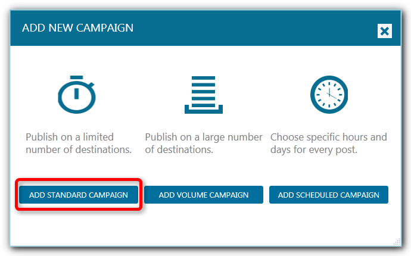

What better way to drive more traffic to your website than adding as many social networks as possible into your marketing strategy. You will reach new audiences by having your content shared on more than one social network. Some people prefer Facebook, other prefer Pinterest, or Twitter or even Google Plus. If you build a consistent presence on multiple social channels, you will undoubtedly increase your audience in no time.
We already discussed how to get traffic from the most popular social channels: Facebook, Twitter and Instagram. Today we will add Pinterest, Google Plus, and LinkedIn into the mix. We will see how to use these platforms to drive significant traffic to your website, and how to promote your business on multiple platforms at the same time using JARVEE.
Not only you will get more exposure, traffic, and therefore more clients, but you will improve your productivity and save days of hard work thanks to JARVEE.
Add Pinterest Into The Marketing Mix
On Pinterest, people are practically creating shopping lists with their boards. There is no other social platform with so many people engaged and ready to shop. You shouldn’t think twice before adding Pinterest to your marketing strategy.
If you don’t have a business that revolves around beautiful visuals, here are some ideas for you:
- you can create a board with pictures from your blog posts, thus creating a link back to your website and getting extra traffic from Pinterest
- you can create a board with the pictures you share on Instagram
- research your target audience to find out what their passions are and create more boards for them.
- study your competition and get inspired
If you still need convincing here are some of our guides on how to create and optimize your Pinterest boards:
- How To Make A Pinterest Board That Rocks
- 10 Ways to Improve Your Pinterest Boards and Grow your Following
Now let’s see how to best automate your Pinterest posting with JARVEE, step by step:
- Step 1 – Create a Destination List for your Pinterest Marketing
- Step 2 – Create a standard campaign
So, if you want to promote your blog on Pinterest, the best way to start is to create a board where you will be adding suggestive pictures from your articles that will link back to your site. This way you will create a new traffic source for your blog. After creating the board and setting up your Pinterest account in JARVEE, you need to go to the Destination Lists section and create a new destination list for this board.
So, click on the ADD NEW DESTINATION LIST, and select the board you just created in the Pages/Boards section. Click on the checkbox in the SELECTED column and, of course, give a name to your board.

- Step 3 – Add your Pinterest content
So, if your plan is to promote your blog posts, the best way to add this type of content on auto-pilot is to add the RSS feed from your blog to the campaign.To do this, go to What to Publish and click on the RSS POSTS tab. Add your feed URL and template in the corresponding fields. Your template can be something like [TITLE], without other tokens, because we will set the blog post URL to be the pin’s Source URL.

Make sure you check “Create image post(where possible)” and “Set the feed link as the Post’s SourceURL”. This will ensure that your pin will direct users to your website.
Now click on ADD FEED.
In the table below you will see your newly added RSS feed. Here you can review your settings again and you can choose to extract as many posts as you want (by default it will extract the latest 10 posts). If you want to review your posts you can do that by clicking on the GET 5 TO DRAFTS. This will extract five posts and send them to the Drafts tab. You can check them out and see if it’s what you want, or you need to adjust the template or settings.
When ready you can click the START button. This will start the extraction of your latest posts and add them to the Posts List tab to be published when the campaign starts. Every time you will have a new blog post, it will be automatically added to the Posts List.

- Step 4 – Choose your timers
Go to When To Publish tab and choose how many posts you want to have per day. On Pinterest, you can have 5 or even more posts per day. If you have enough content you can easily share 10 or 20 posts per day without affecting your engagement. The best times to post though is in the afternoon and evenings.

-
In my Pinterest campaigns, I chose 5 posts per day between 10:00 AM and midnight, but you might want to test a few intervals and see what works best for you.
- Step 5 – Review your posts and start the campaign
Now you can go to the Posts List and see your first Pinterest posts. Make sure everything is ok and then go to the Overview tab to start your campaign.
That should keep your Pinterest account active for quite some time.
Just like for your Twitter or Instagram accounts, we have extra tools that will help you grow your Pinterest accounts faster than ever before. You can use the Follow and Unfollow tools to search and follow pinners in your industry. Some of them will check your account and follow you back. Then you have the Like, Comment and Repin tools that you can use in a similar way, to find pins in your niche and engage with them. People will notice you and either follow you or engage with your content.
We have video tutorials for all these tools, so if your goal is to grow your Pinterest accounts fast and quick, you should check them out.
Improve Your SEO With Google Plus
You might think that there is little incentive for you to start marketing your business on Google Plus. However, you got one thing right: this is no “ordinary” social network. Google Plus is, in fact, a social layer over Google’s products. This means that developing a strategy for this social channel, will not only help you reach a new, niched, audience, but will help you improve your relationship with other Google Services.
Let’s take the Google search for example. We can’t know for sure how Google’s algorithm works, but most certainly your presence on Google Plus can only help with your position in the search results.
If you already studied our tutorials on how to schedule your Facebook Marketing for an entire month in just 10 minutes with JARVEE, and how to grow your fanbase and traffic with sharing your content on specialized groups in your industry, then you pretty much know how to set up a campaign for Google Plus too.
You just need to follow the exact steps, and instead of adding your Facebook page, accounts, and groups you belong to, you need to create a destination list with all your Google Plus accounts, communities, and Pages.
Just like with Facebook, you have a Group Finder and Joiner tool that will help you find communities in your niche where you can share your content.
With Google Plus, you can adapt the same model to frequency and number of postings per day as for Facebook. So, the best strategy is to create a standard campaign that shares your marketing content on both social networks at the same time.
With JARVEE, you can easily do this, with no changes in the campaigns you already set up. If you already created a campaign for your Facebook Marketing using our previous tutorial, then in about 3 minutes you will have your Google Plus content automated as well.
How, so? Well, you just need to go to the Destination Lists tab and edit the Destination list you created for your Facebook Marketing:
- click on the destination list you created for your Facebook accounts, pages and groups
- select your Google Plus account, the pages, and communities you want to share your content with
- and you’re done, the same campaign will also post on your GooglePlus account.
Develop Your Business Connections With LinkedIn
LinkedIn is another social network that can help you expand your reach and improve your business results. It offers a wide range of tools for job seekers or HR departments, but not only that. It can be a powerful platform for business development and, if used right, can increase your traffic considerably.
One way to drive traffic to your website is to use your LinkedIn Profile to share the latest blog posts and news with your connections. You can promote your blog on LinkedIn simply by adding your profile to the destination list you created for your Facebook and Google Plus Marketing in the section above.
Another way to drive traffic to your website using LinkedIn is by searching and joining groups in your niche, where you can share your content with like-minded professionals. This way you will reach an entirely new audience that might not be present on Facebook or Twitter.
Searching for groups in your niche is quite easy when you have powerful tools like JARVEE’s Group Finder. To use Group Finder for your LinkedIn profiles, you need to go to the Tools section.
Here, click on the LinkedIn profile you want to use so you can access the tools available for this social network.
Click on Finder and set up your searching filters:

- first, add the keywords that define your industry so you find the most relevant groups
- also add an exclusion list of keywords to refine your search: for example, I want to find groups with people discussing social media topics, but I don’t want to find groups about social media jobs, so I add “social media jobs” to the exclusions list:
- now, you might want to skip groups that are too small or too big. You can set up minimum and maximum number of members.
- when ready you can start the group finder.
When the tool finished searching for groups based on your filters, you can review your results. If necessary, you can add to your keywords list or the exclusions list. After a few searches, you should have a nice collection of groups.

Select the ones that are big and active enough to meet your goals and send them to the Joiner tool.
The Joiner Tool will help you join all the groups you found with the Group Finder. All you have to do is set up some delays to avoid joining too many groups in a short period of time. I usually use the default settings to be safe.

After you click on the START GROUP JOINER you will see your groups moving from the “Waiting for a Join Request” section to the “Active Join Request” section in the Joiner tab.
Once you joined your targeted groups you can create a JARVEE campaign to share your content with the members of these groups.
So, in a few minutes, you did what other marketers do in hours, if not days of work.
Did I mention that we have video tutorials for all our tools and features? If you want to learn more about how to improve your social media marketing, check them out in the Video Tutorials tab.
Dman says
Just stopped by to say I became a big fan of JARVEE and have no idea what I would do without it now. Great software, thanks for making it!
Adam says
Thanks, that’s what we love to hear !
Michael says
This seems like a big time saver. I’m just not sure what social network I should focus on for my business. Will follow your method to see where I will get more results.
Thanks!
Chris says
Hi Adam,
My name is Chris, I’m graduating this year and I’m wondering how Jarvee can help me build a good LinkedIn profile? I’m not very tech savvy, if there’s a tutorial about that please share it with me.
Charles says
I’m sorry but I’m confused a bit. When you say cross-promoting on Social Media, do you mean something like promoting my Facebook page by giving it a shout out in my Twitter account for example? and like that or taking advantage of all social media networks instead of one?
Adam says
You can definitely do both, promote on more social platforms for a higher reach and share the same thing on all of them as it will probably reach different people anyway.
James says
I liked the RSS POSTS feature that will automatically grab posts from my wesbite with images and pin them automatically to my pinterest boards with a link back to my website, I used to do that manually and it took a lot of my time :/ I wish I found out about this earlier, I use Jarvee for 2 months already and I never paid attention to it.
Adam says
That is a really helpful feature indeed, there are many gems hidden all over.
Gerald says
I’m very interested in the “”Improve your SEO with Google Plus”” part, I just started a blog focusing on less competitive french keywords. I chose french because there isn’t lot of competitors like in English.
I didn’t know that Google really likes social signals coming for Google Plus. Thank you very much for sharing these valuable tips with us.